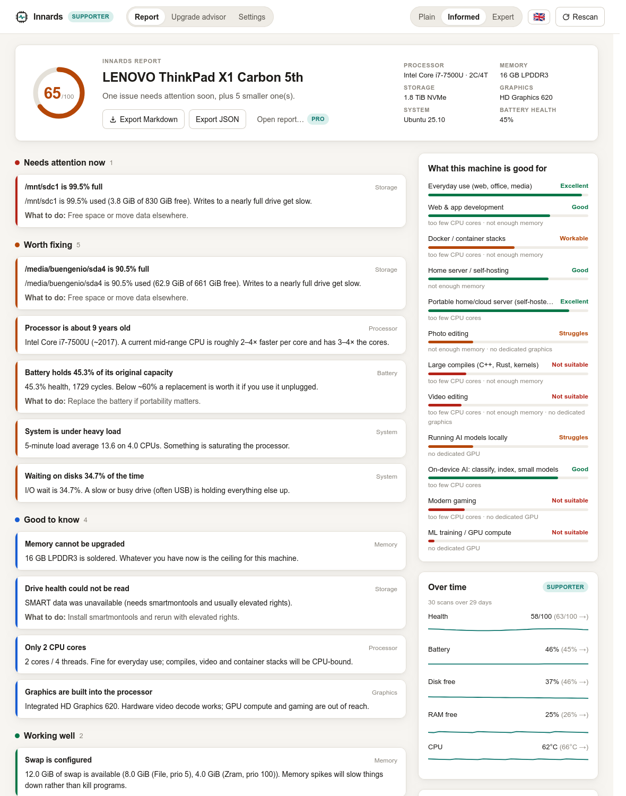
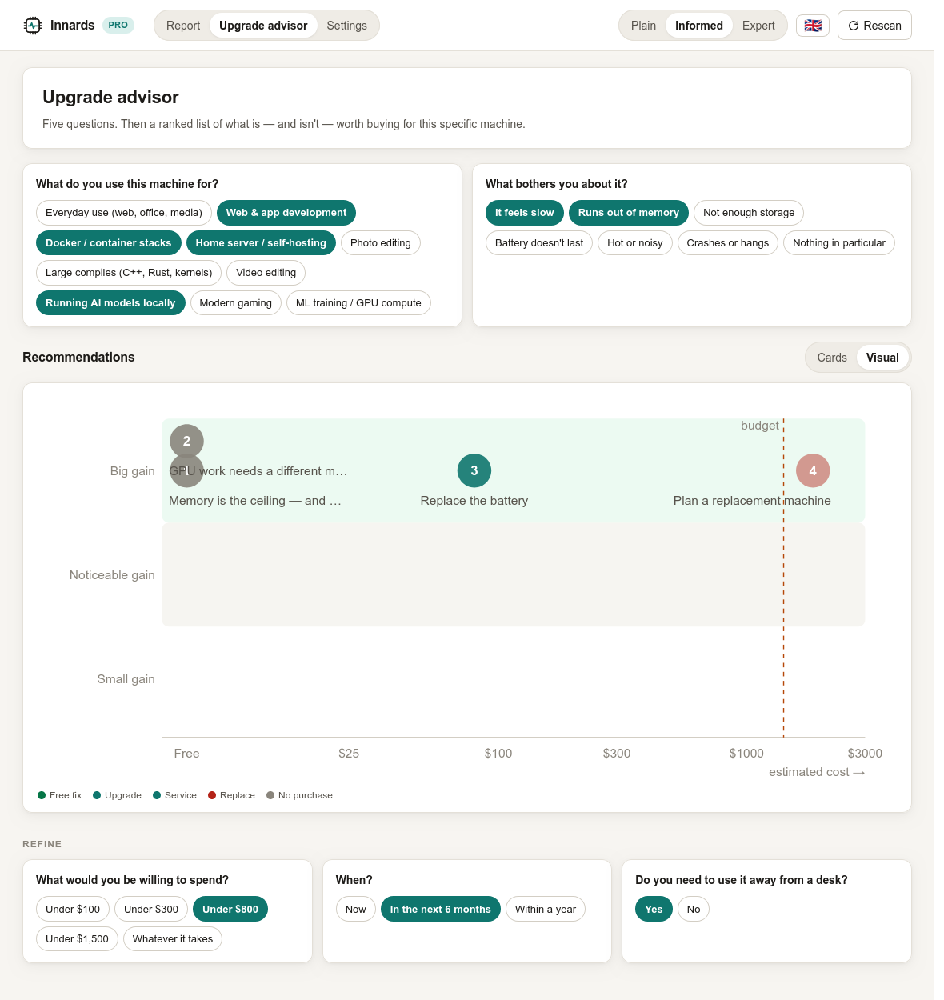

Innards inspects the computer it runs on and explains what it found in plain language, at the level of detail you choose, in your language. Then it tells you what the machine is still good for, and what, if anything, is worth buying.
No accountNo telemetryNo network calls in the free tierMIT licensed

Three levels
The same finding, phrased three ways.
Not a "simple mode" that hides things. Every finding in the report is written for three readers, and the raw evidence is one click away at any of them.
Plainfor someone who doesn't want jargon
Informedfor a comfortable computer user
Expertfor people who want unsafe_shutdowns=69 and the kernel parameter to fix it
Level
Finding
KINGSTON SNV2S2000G sees many unclean shutdowns
Storage
This drive has been switched off without warning 69 times — roughly one in every 23.3% of power-ups. That's a sign of crashes, hangs, or power loss.
69 unsafe shutdowns out of 276 power cycles (23.3%). Either the machine is hanging on reboot, or power is being cut.
unsafe_shutdowns=69, power_cycles=276 (23.3%). On DRAM-less NVMe drives with HMB this often indicates the controller failing to exit deep APST states at shutdown; consider nvme_core.default_ps_max_latency_us=0.
What to do: Check for reboot hangs; consider disabling NVMe deep power states.
nvme0n1: unsafe_shutdowns=69 power_cycles=276
No swap configured
Memory
Your computer has 14.9 GiB of memory and no backup space on disk. When memory runs out, the system has no choice but to close programs abruptly.
There is no swap space at all. With 14.9 GiB RAM and 31.2% currently free, a memory spike will trigger the out-of-memory killer instead of slowing down gracefully.
swap_total = 0. Available memory is 31.2% of 14.9 GiB. Without swap the kernel cannot reclaim anonymous pages under pressure, so the OOM killer fires on the first sustained spike. zram is the low-cost fix; a swapfile as a second tier prevents hard kills.
What to do: Add swap: a compressed zram device plus a modest swapfile is safe on any SSD.
swap_total=0, available=4.6 GiB (31%)
Wording is taken verbatim from the app's rule catalog (i18n/en.json). Both findings are from the ThinkPad that started the project; the power-cycle count is illustrative.
How it works
Rules, not vibes.
Every line in the report comes from a small, readable rule with a threshold you can check in the source. Nothing is guessed. The guides walk through the same checks by hand.
Probe
Reads CPU, memory, swap, drives (including SMART health), GPU, battery, thermal sensors, network and load from /sys, /proc, DMI, hwmon, IOKit or WMI. No root needed, except an opt-in prompt for SMART.
Judge
Rules turn the snapshot into findings with a severity: needs attention now, worth fixing, good to know, working well. Each finding keeps the raw evidence that triggered it.
Explain
Findings render at three reading levels in English or Spanish from one JSON catalog. Switch level or language and the same report re-renders instantly. Adding a language is one file.
Capability scores
What is it still good for?
Most tools tell you what you have. Innards tells you what that means for what you want to do: ten workloads, each with a grade and the limiting part named.
These are the real scores for the 2017 ThinkPad in every screenshot. It's an excellent everyday machine and a decent home server. It is not going to train a model.
Everyday use (web, office, media)Excellent
Web & app developmentGood
too few CPU cores · not enough memory
Home server / self-hostingGood
not enough memory
Docker / container stacksWorkable
too few CPU cores · not enough memory
Photo editingStruggles
not enough memory · no dedicated graphics
Running AI models locallyStruggles
no dedicated GPU
Large compiles (C++, Rust, kernels)Not suitable
too few CPU cores · not enough memory
Modern gamingNot suitable
too few CPU cores · no dedicated GPU
Video editingNot suitable
too few CPU cores · not enough memory · no dedicated graphics
ML training / GPU computeNot suitable
no dedicated GPU

Upgrade advisor
Advice that will tell you not to spend.
Five questions. Then a ranked, costed list of what is, and isn't, worth buying for this specific machine. Free software fixes rank first. Soldered memory and a missing GPU slot are named as the reason to change machine, not a part to buy.
Pro adds where to buy each recommendation new, refurbished or used, in your region.
No network code in the free tier. No account, no telemetry, no crash reporting, no update pings.
Narration is opt-in and uses your own key. The Supporter summary sends only the already-rendered findings to the Claude API. Never serial numbers, hostnames or process lists.
License keys are verified offline. Paid tiers are unlocked by an Ed25519-signed key that the app checks locally. The one exception: a Pro or Team subscription key within 30 days of expiry asks innards.app once at startup for a renewed key, and sends nothing but the key itself.
You can check all of this. The source is public and the engine is a single Rust crate with no networking dependency.
Pricing
Free for everyone. Paid tiers fund the work.
The full report is free and always will be. The paid tiers unlock convenience features and keep an independent developer developing. The code for all of them is in the same public repository.
Free
$0
Forever. No account.
The full report: findings with evidence, health score, verdict
Three reading levels: plain, informed, expert
Every language the app ships with (English and Spanish today)